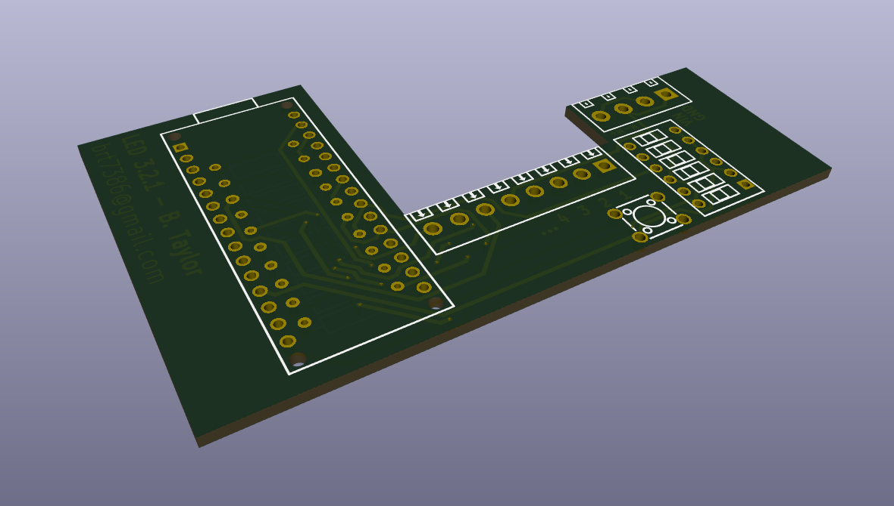

Enhancing Vector
Surveillance
An engineered modification to the standard CDC mosquito light trap, providing custimizable LED settings while increasing battery efficiency

Features & Improvements
The Ttrap is an integrated enhancement to pre-existing CDC technology for minimal cost
[Graph: Power Consumption Comparison]
Energy Efficiency
LED lights lower energy use significanlty compared to incandescent bulbs on standard CDC designs.
[Graph: Capture Rate Data]
Wavelength Customization
LED lighting chip provides a range of light from infrared to ultraviolet. Control switches allow researchers to target specfic wavelengths.
Custom PCB Architecture
The core of this modification is a custom-designed printed circuit board which bypasses the legacy components of the standard CDC trap. This hardware introduces voltage regulation, programmable light cycles, and other customizable features.
[...]